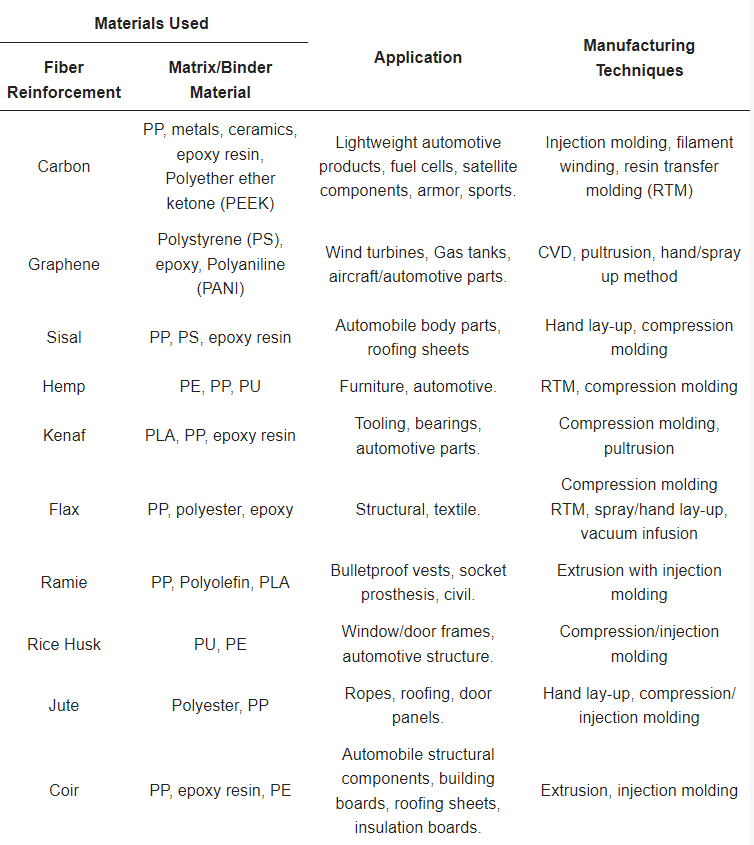

Zaradi dobrih lastnosti (glavne so: nizka gostota in visoka odpornost) so polimerni kompoziti uporabljeni v mnogih industrijah za veliko različnih izdelkov, kot so:
- Avtomobilska industrija :
- karoserija dirkalnikov, odbijači, vrata, pogonska gred,…
- Pomorska industrija :
- trupi ladij, kanuji, kajaki,..
- Šport :
- golf palice, smuči, ribiške palice, teniški loparji,…
- Letalska in vesoljska industrija :
- letala, helikopterji, vesoljska plovila, sateliti,
- Biomedicina :
- vsadki, ortopedske naprave, rentgen mize,…
- Elektrika :
- ohišja, izolatorji, konektorji,..
